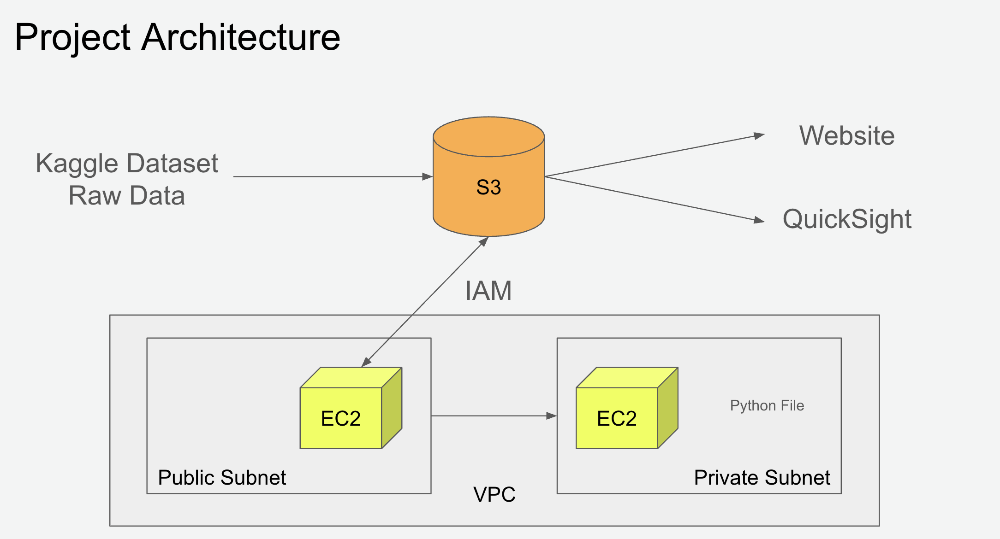

Scope of Project
Objective: Compare salaries of job listings on if AWS is listed as a requirement in the description to see if knowing AWS pays more than jobs without AWS in the description.
- Compared to all tech job listings in 2017 on Glassdoor.
- Compared to data science related job listings in 2017 on Glassdoor.
Goal: Create a dashboard in Amazon QuickSight to visualize our findings.
Data Source and Features
Kaggle: Data Source
Features of the Dataset:
- Job Title: Type of job (String)
- Salary Estimate: Estimated salary range offered for job (String)
- Job Description: Description of job (String)
- Rating: Rating of the company (Numeric)
- Company Name: Name of company (String)
- Location: Job city and state (String)
- Headquarters: Headquarters of city and state (String)
- Size: Size of company (String)
- Founded: Year founded (Numeric)
- Type of Ownership: Ownership of the company (i.e. government, private, etc.)(String)
- Industry: Industry revenue (String)
- Sector: Sector area (String)
- Revenue: Industry revenue (String)
- Competitors: Competitors of the company (String)
- hourly: Jobs that pay hourly
- employer provided: Listing submitted by employer (String)
- min_salary: Minimum salary (in thousands)(Numeric)
- max_salary: Maximum salary (in thousands)(Numeric)
- avg_salary: Average salary (in thousands)(Numeric)
- company_txt: Company name (String)
- job_state: The state where the job is located (String)
- same_state: A binary indicator of whether the job is the same state as the person looking at the job (String)
- age: The age of the person looking at the job (Numeric)
- python_yn: A binary indicator of whether the person looking at the job knows Python (String)
- R_yn: A binary indicator of whether the person looking at the job knows R (String)
- spark: A binary indicator of whether the person looking at the job knows Spark (String)
- aws: A binary indicator of whether the person looking at the job knows AWS (String)
- excel A binary indicator of whether the person looking at the job knows Excel (String)
- job_simp: A simplified job title (String)
- senority: The senority of the job (String)
- desc_len: The length of the job description (Numeric)
- num_comp: The number of competitors for the job (Numeric)
Project Architecture
